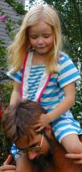

Other links:

In hindsight, this turned out to be exactly the right thing. We have had lots of fun with the trailer (though Anna is almost too big for it now), and though Anna has never been involved in a serious accident while in the trailer, the following incident made me feel very happy about the safety aspect of our investment in the Burley.
Later that summer, on a Sunday afternoon in the middle of August, Anna and I went out for a ride on the Minuteman Bike Path, culminating at the Arlington Reservoir, where we had some fun in the water. It was an overcast but otherwise hot and steamy day. Although I wore just shorts and sneakers, the heat was only tolerable while moving; otherwise, the sweat wouldn't evaporate. By the time we made it to the reservoir, I was encrusted with salt from dried sweat, so the water was especially welcome, though in retrospect I should have actually swum, rather than just wading. Later on, Jan joined us, having finished her work day. Then, Anna drove home with Jan, leaving me to tow the trailer, empty except for the tiny stuffed bear Anna left on the seat, back to the house.
In no time, I was moving pretty quickly, since I was unladen and going slightly downhill. When I reached the Park Street overpass, a kid on a bicycle appeared suddenly out of a blind entrance on my right, making a left turn across my path, and moving fairly quickly because of the slope down from the gap in the fence to the bike path. (Although that is an "unofficial" entrance, as it comes through the fence from a private parking lot, I notice that somebody improved it somewhat thereafter, reducing the grade and cutting some of the obscuring underbrush.) I started braking as soon as I saw him, but knew I wouldn't be able to stop in time. He saw me almost immediately, and I suspect he braked as well, which turned out to be unfortunate. Despite his initial speed, and the fact that I was trying to steer as far right as I could without going off of the right-of-way, I still wound up clipping his back wheel, which knocked him down and sent me flying, with a twist to the right. After some brief air time, I landed on my right side on dirt (or dirty pavement) and slid for a few seconds that seemed to last forever. The trailer has a special flexible coupling that allows it to stay upright, even when the bicycle is lying flat, so the trailer just coasted along behind me, no doubt adding to the length of the slide. When I got up, I was a bit dazed, but I remember seeing the kid pick up his bike and zip off, so I had to assume he was OK. (We may have exchanged a few words to this effect, but if so, I don't remember them.) I had to sit down for a bit and let the adrenaline shivers pass; during that time, at least half a dozen other bike-path users asked me if I was OK. I had bloody gashes all up my right side, fortunately none of them very large, most of which I cleaned with what remained in my water bottle. (I left the shoulder alone, since the water only washed the dried sweat into the wound). But I was still able to ride, and though the frame on my bicycle was bent, it was still ridable. So I continued homeward, much more slowly this time.
When I got there, I yelled through the kitchen window, "Hi, Jan, I've had a problem." I did this so that my sorry state wouldn't be too much of a surprise, but since it took me much longer to get home than it should have, I needn't have bothered. Both Jan and Anna came rushing out to the back yard, where I had parked the bicycle and trailer. Anna then touched me to the core when she leaned over and planted a kiss on the "ouch" on my knee (actually, just next to it, which is just as well). I had been kissing her ouches regularly for some time, and had shared with her the fact that even Dads get ouches -- she called the little scrapes on my hands from rock climbing my "timing ouches" -- but this one gesture showed such a depth of love and empathy that it made a deep impression. I'm sure I will always remember that moment.
Finally, when I was preparing the bicycle and trailer to put away, I
noticed the tiny bear that Anna had left, still lying on the seat. If
Anna had still been riding with me, she would hardly have had her
feathers ruffled. But I'm glad she didn't get to see her dad ground for
hamburger before her very eyes.
Anna "blissed out" with kittens
These were taken of Anna with one (or possibly both) of her friend
Shelda's cat's kittens on 1 April 2001. The kittens were only six days
old at the time, and their eyes hadn't yet opened.
Here is a girl who is totally engrossed in the act of cuddling.
In this one, the kitten is probably trying to nurse. (Wouldn't you
have an expression like that if you had a warm mouth nibbling away at
your neck, looking for nipples?)
Bob Rogers
<rogers@rgrjr.dyndns.org>
$Id$